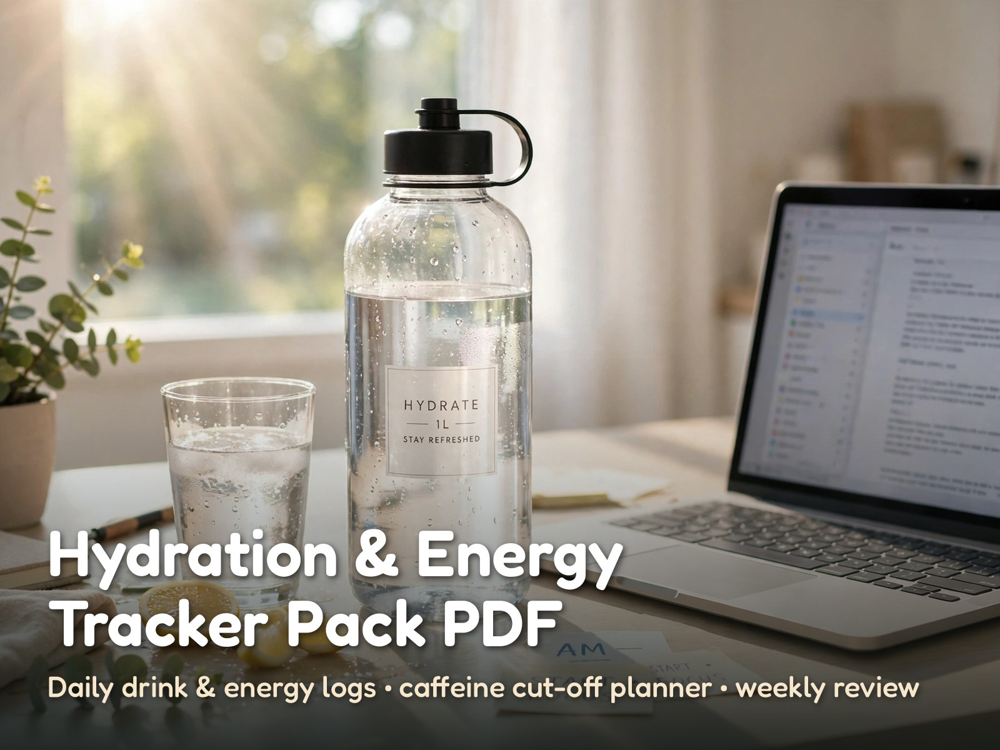

$7 USD — instant download
Hydration & Energy Tracker Pack PDF — Daily Drink & Energy Logs, Caffeine Cut-Off Planner & Weekly Patterns Review
Get it on GumroadMost people guess about their hydration and their energy — and guess wrong in consistent ways. They drink less than they think, let caffeine run later than they realise, and blame the afternoon slump on lunch. This pack replaces guessing with one baseline week of light tracking, then shows you how to read the pattern and test exactly one change at a time.
Daily log sheets record every drink in millilitres and an energy score at set times, one page per day with four weeks of sheets included; standard values for common drinks make logging take seconds. A hydration chapter — without the myths — shows how to find your personal fluid range, why timing beats volume, and the anchor moments that make drinking enough automatic. The weekly summary sheet compresses each day to one line: fluid total, morning and afternoon energy, last caffeine time and hours slept. That single page is what your review reads.
A pattern chapter walks through the five most common findings — the 15:00 crash, wired-at-night, the weekend slump and more — with the specific levers to test for each. The caffeine cut-off planner gives a three-step method to find your personal last-caffeine time by experiment, with suggested cut-offs by wake time. Adjustment experiment sheets formalise the process: one change per week, a success number chosen in advance, and an end-of-week verdict — plus a sleep page, a troubleshooting checklist and a one-page Personal Pattern Map to fill in with your results.
This is a self-tracking and lifestyle-organization tool, not medical advice; it does not diagnose or treat dehydration, fatigue or any other condition. Fluid needs vary — if you have a kidney, heart or other condition, take medication affecting fluid balance, or have been advised to restrict or increase fluids, follow your healthcare professional's guidance. Persistent unexplained fatigue is worth a doctor's visit. Within those honest bounds, one week of light data beats a year of guessing.
This is a digital download — no physical item will be shipped. For personal use; please do not redistribute or resell the file.